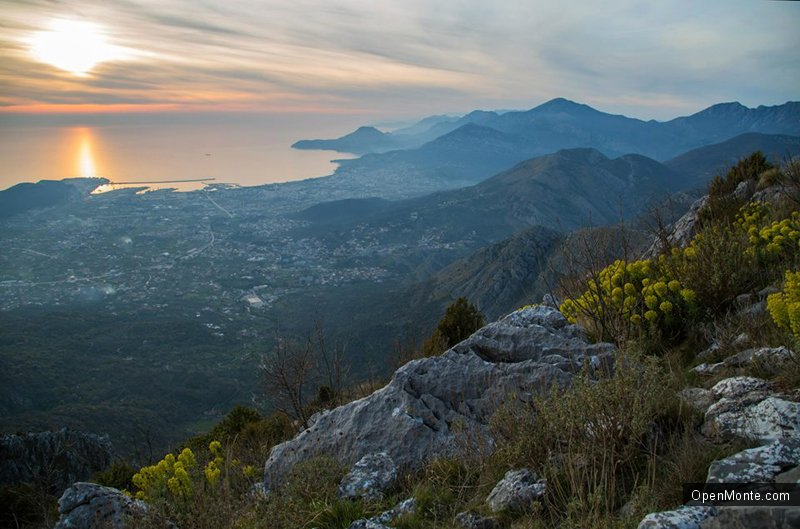
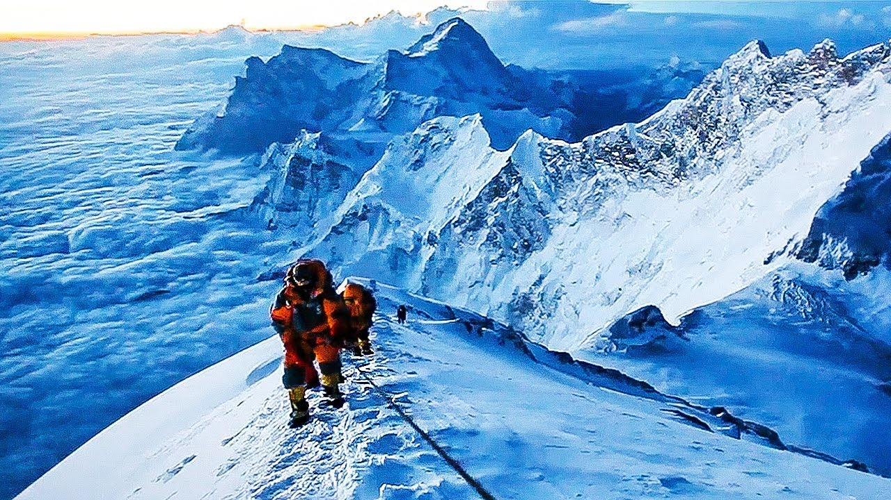
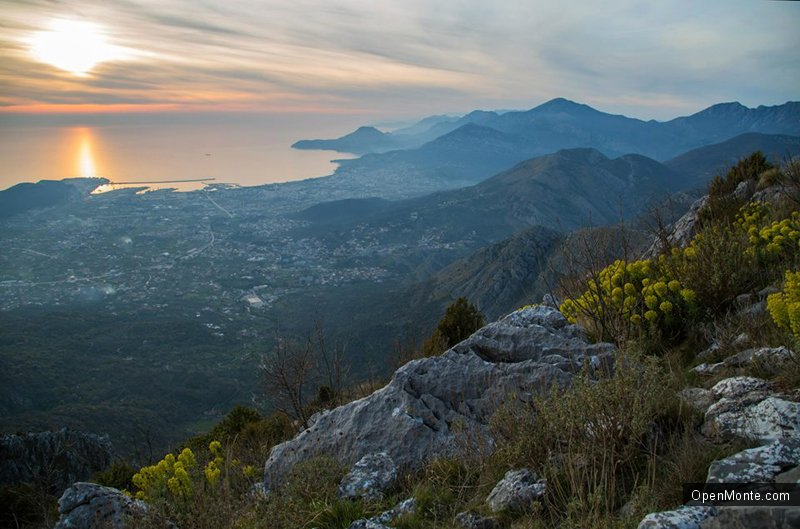
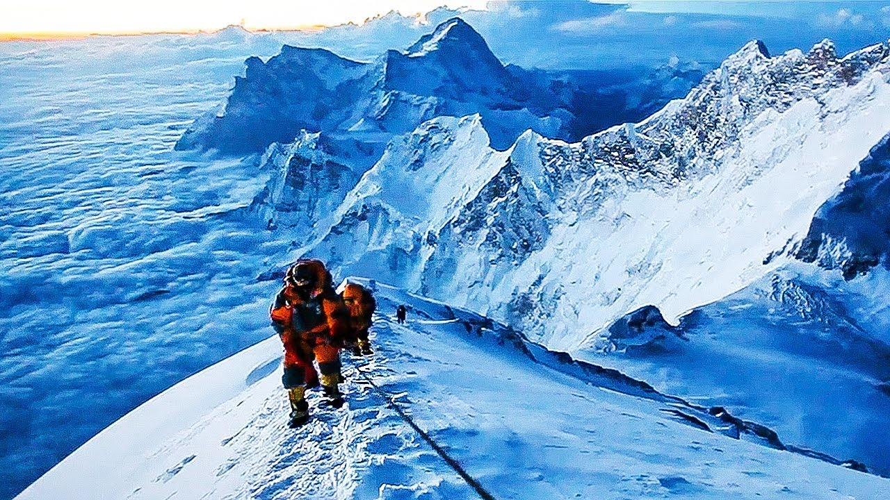

Гора-форма рельефа, изолированное резкое поднятие местности с выраженными склонами и подножием.
В горах, особенно высоких, встречается большое количество видов микрорельефа (мелких форм рельефа, не превышающих в поперечнике и в высоту нескольких метров), нехарактерных для равнинных участков земной поверхности.
Высота гор может быть различной.От 500 метров,до 11 километров (на Земле).Горы бывают наземными,и подводными,вершины подводных могут образовывать острова.
Горы могут образоваться в любой части планеты,в результате движения литосферных плит.Самые высокие горные хребты находятся в Азии (гималаи),Европе(Альпы,Карпаты),в Америке и Австралии.В Антарктиде горы практически отсутствуют
Проживание в горной местности для человека тяжело.Высокие температуры и непригодность почв затрудняют развитие.Вершины высоких гор покрыты снегом,во все времена года. Для выращивания растений более пригодны Виноградные кусты,Апельсиновые деревья,Оливковые деревья.Хозяйство в горах специализировалось на молочном и мясном животноводстве.А так же добыча полезных ископаемых.
 


